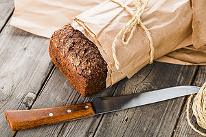

|
Its all about the bread: Easy home baking
April 16, 2016 | Carla Tan Directions 1. In a large bowl, dissolve yeast in warm water. 2. Add the sugar, salt, oil and 3 cups flour. 3. Turn onto a floured surface; knead until smooth and elastic, about 8-10 minutes. 4. Punch dough down. 5. Bake at 375° for 30-35 minutes or until golden brown  |
Carla's cooking
tips
#1 Its all about the ratio of flour to water. You will get more consistent and reliable results if your measurements are accurate.#2 Resist adding extra flour.#3 Use a bench scraper to scrape any dough that might stick to your counter. |